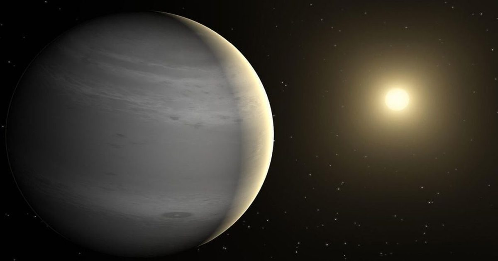

27 мишеней для первого в мире частного космического телескопа
Приготовьтесь к эпохе частных космических телескопов.
Космический телескоп Лазури будет запущен через несколько лет, и часть его миссии заключается в наблюдении за экзопланетами.
В новом исследовании представлен список из 27 целей для экзопланет, некоторые из которых очень хорошо известны и, безусловно, выиграют от более глубоких наблюдений.